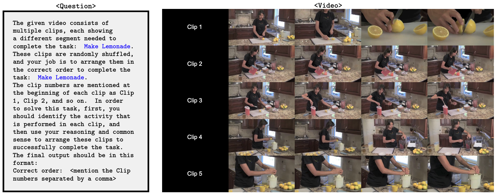

|
Paper
|
Website
|
Code
|
Benchmark
|
Leaderboard
|
Our contributions
👉 To improve the performance of open-source LVLMs on VCRBench, we introduce RRD, which decomposes video-based causal reasoning into two related sub-tasks video recognition and causal reasoning. This simple modular approach allows LVLMs to focus on one type of task at a time, first recognition, then reasoning, which results in notable performance gains of up to 25.2%. |
|  | We present an example of video-based long-form causal reasoning task from VCRBench. The correct order is: Clip 1: Cut lemon into slices, Clip 5: Squeeze lemon into the pitcher, Clip 4: Pour lemon juice and water into the pitcher, Clip 3: Stir the lemonade mixture, Clip 2: Pour lemonade into a glass. |
| Models | # Frames | Acc ↑ | Step Acc ↑ |
|---|---|---|---|
| Random Guess | 7.8 | 24.1 | |
| InternVL2.5-1B | 64 | 1.4 | 10.3 |
| InternVL2.5-2B | 64 | 6.3 | 16.2 |
| LongVU-3B | 1fps | 0.0 | 7.0 |
| InternVL2.5-4B | 64 | 1.6 | 9.5 |
| VideoChat2-7B | 16 | 0.3 | 5.8 |
| InternVL2.5-8B | 64 | 2.7 | 11.1 |
| LLaVA-NeXT-Video-7B | 64 | 0.0 | 17.4 |
| MiniCPM-o-V 2.6-7B | 64 | 2.5 | 11.0 |
| Qwen2.5-VL-Instruct-7B | 1fps | 7.1 | 20.9 |
| VideoLLaMA3-7B | 128 | 1.6 | 13.1 |
| LongVILA-7B | 128 | 0.3 | 1.1 |
| LongVU-7B | 1fps | 0.0 | 2.4 |
| NVILA-15B | 8 | 0.6 | 3.6 |
| InternVL2.5-26B | 64 | 2.7 | 13.7 |
| InternVL2.5-38B | 64 | 11.0 | 27.4 |
| LLaVA-NeXT-Video-72B | 32 | 5.2 | 18.6 |
| Qwen2.5-VL-Instruct-72B | 1fps | 29.0 | 44.0 |
| InternVL2.5-78B | 64 | 14.5 | 34.0 |
| GPT-4o (gpt-4o-2024-11-20) | 32 | 29.0 | 36.6 |
| Gemini-1.5-Pro (gemini-1.5-pro) | 1fps | 48.2 | 65.3 |
| Gemini-2.0-Flash-Thinking (gemini-2.0-flash-thinking-exp) | 1fps | 58.0 | 67.7 |
| Human | 96.4 | 98.3 |